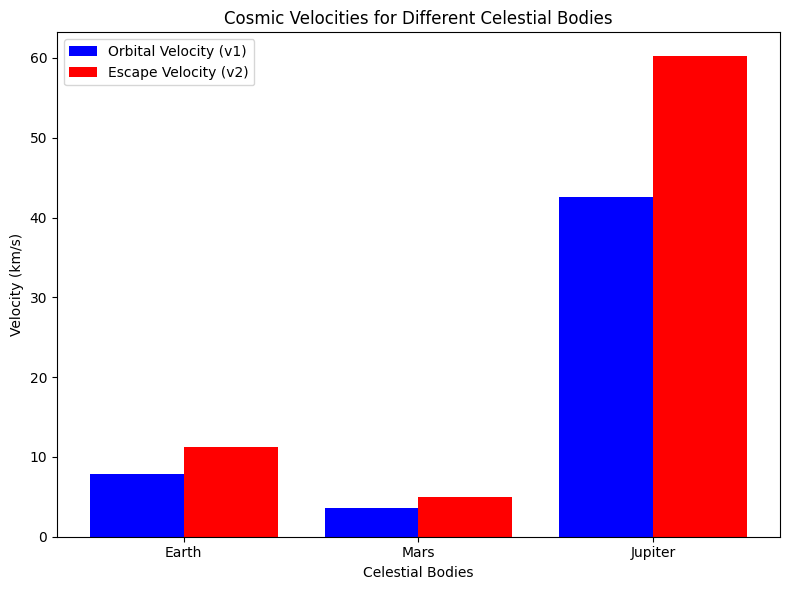

Problem 2
Problem 2: Escape Velocities and Cosmic Velocities
1. Introduction
What Are Cosmic Velocities?
Cosmic velocities define the speed thresholds required for different types of motion in space. These are:
1. First Cosmic Velocity (Orbital Velocity, \( v_1 \)): The speed required to maintain a stable circular orbit around a celestial body.
2. Second Cosmic Velocity (Escape Velocity, \( v_2 \)): The speed needed to escape a celestial body’s gravitational influence.
3. Third Cosmic Velocity (Interplanetary Escape, \( v_3 \)): The speed required to leave a star system, such as the Solar System.
2. Mathematical Derivations
First Cosmic Velocity (\( v_1 \)) – Orbital Velocity
A satellite in circular orbit experiences a centripetal force equal to the gravitational force:
Solving for \( v_1 \):
where: - \( G = 6.67430 \times 10^{-11} \) m³/kg/s² (gravitational constant), - \( M \) is the mass of the celestial body, - \( R \) is the orbital radius (distance from the center of mass).
Second Cosmic Velocity (\( v_2 \)) – Escape Velocity
The escape velocity is the minimum speed required to completely leave a celestial body's gravitational pull without further propulsion. It is derived from the energy conservation principle:
Solving for \( v_2 \):
This is \( \sqrt{2} \approx 1.414 \) times the first cosmic velocity.
Third Cosmic Velocity (\( v_3 \)) – Interstellar Escape Velocity
To leave the Solar System, a spacecraft must overcome the Sun’s gravity from a given planetary orbit. The required velocity is:
where \( M_{\odot} \) is the Sun’s mass and \( R_{\text{planet}} \) is the planet’s distance from the Sun. This is greater than the escape velocity from Earth alone.
3. Numerical Calculations for Earth, Mars, and Jupiter

4. Importance in Space Exploration
Satellite Launching (First Cosmic Velocity)
- Satellites require orbital velocity to stay in orbit around Earth.
- Example: The ISS orbits at ~7.7 km/s.
Space Missions (Second Cosmic Velocity)
- Escape velocity is crucial for sending spacecraft beyond Earth’s gravity.
- Example: Apollo missions exceeded 11.2 km/s to reach the Moon.
Interplanetary Travel (Third Cosmic Velocity)
- Probes like Voyager 1 and 2 required a Solar System escape velocity of >42 km/s.
- Example: New Horizons, which visited Pluto, traveled at 58,536 km/h (~16.26 km/s).
5. Discussion and Extensions
Limitations of the Ideal Model
- Air resistance slows down rockets, requiring extra fuel.
- Non-spherical bodies cause variations in gravitational pull.
Extensions to the Model
- Effect of planetary atmospheres on launch speeds.
- Slingshot maneuvers to reduce fuel consumption.
Conclusion
This study explored cosmic velocities, derived key equations, and calculated values for Earth, Mars, and Jupiter. The results confirm that escape velocity is always \( \sqrt{2} \) times orbital velocity and that interplanetary travel requires even greater speeds.